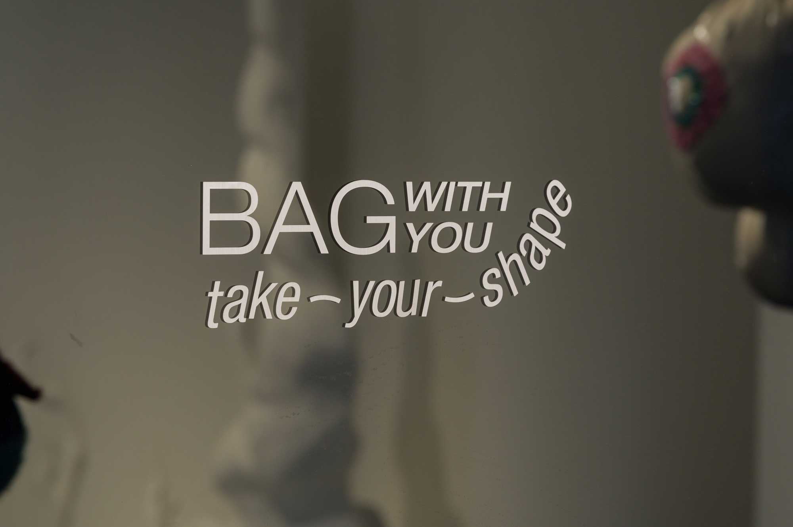
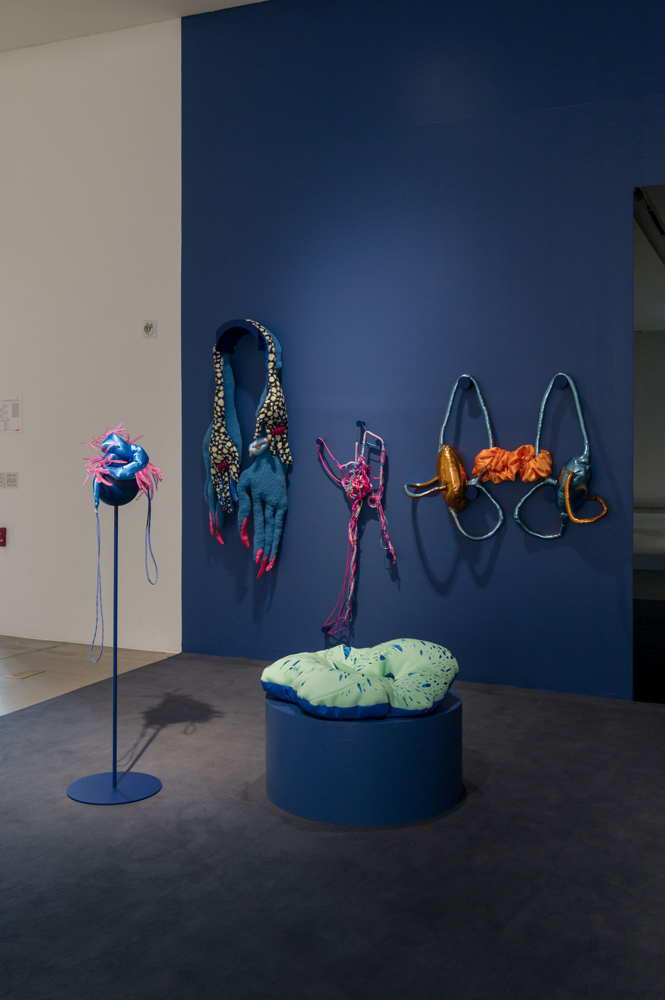
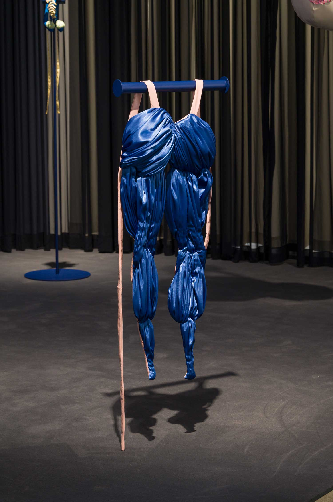
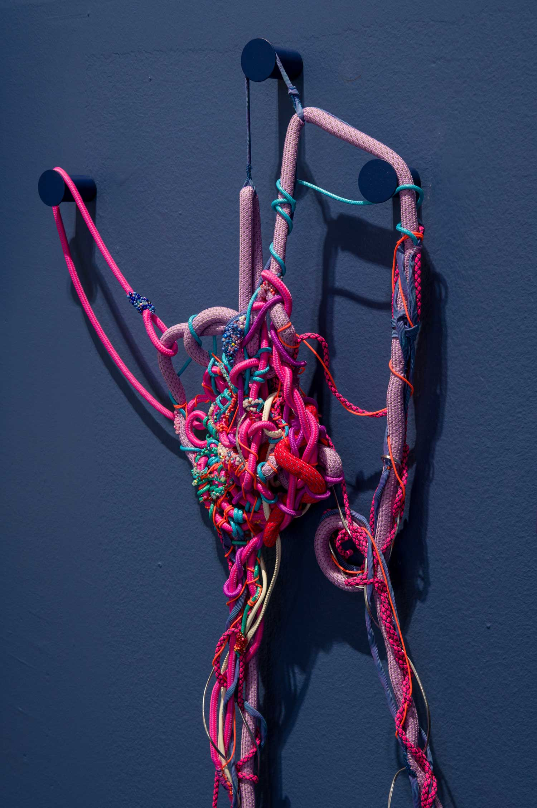
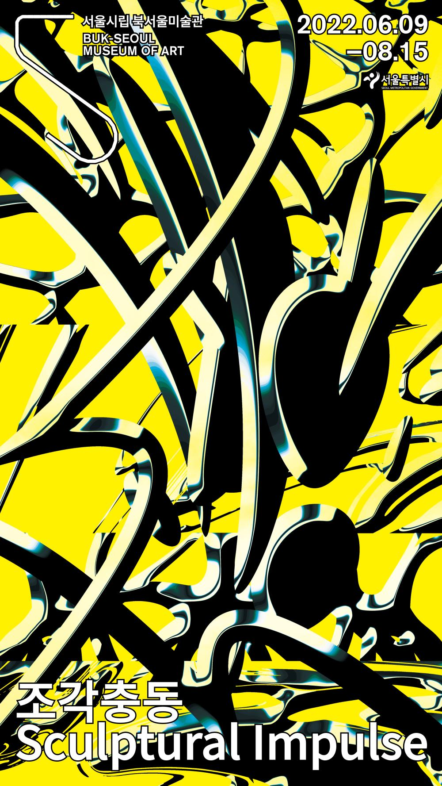

BAG WITH YOU : take your shape

Bag with you_Take your shape, 2022
.jpg)
Bag with you_Take your shape, 2022

Bag with you_Take your shape, 2022

Double Hamstring, fabric, cotton, 110 x 40 x 8cm, 2022

Bleeding well, rope, beads, 150 x 50 x 13cm, 2022
-2.jpg)
Back Eyes, fabric, beads, cotton, 120 x 45 x 45cm, 2022
-2.jpg)
Bag with you_Take your shape, 2022
-2.jpg)
Thinker, fabric, beads, cotton, 23 x 17 x 10cm, 2022
-2.jpg)
Nidation, fabric, beads, weight, cotton, 57 x 90 x 27cm, 2022
.jpg)
Back Eyes, fabric, beads, cotton, 120 x 45 x 45cm, 2022
-2.jpg)
Engraved Keloid, fabric, cotton, 100 x 96 x 18cm, 2022
-2.jpg)
Bag with you_Take your shape, 2022

조각충동 Sculptural Impulse
BAG WITH YOU : take your shape
2022.06.19 - 08.15
전시서문
《조각충동》은 동시대 조각 앞에 놓인 두 가지 필연적인 도전을 상상한다. 첫째, 조각사적으로 양감이나 무게, 재료에 근거한 전통적인 조각 개념이 끊임없이 극복되고 확장되면서 마치 블랙홀처럼 모든 것을 빨아들이지만 속은 텅 비어서 무엇이 조각인지 알 수 없게 된 상황에서의 도전. 둘째, 인간의 감각과 관점을 근본적으로 바꿀 가상현실의 시대를 앞두고, 구석기 시대부터 나타날 만큼 근원적인 형태이자 물질이면서 가장 인간과 닮은 존재인 조각을 다시 검토하고 재구성하는 것이 필요한 상황에의 도전.
이미 2010년대부터 젊은 작가들이 쌓아온 고민과 변화를 바탕으로, 이번 전시는 이러한 도전 들을 해체된 조각 개념이라는 텅 빈 공간을 향한 충동으로 보고, 블랙홀 바깥에 만들어지는 수없이 미끄러지는 여러 맥락의 의미들을 종합하여 해석해보고자 한다. 이를 통해 최근 조각에 대한 주목의 이유와 부분적으로 다루어졌던 새로운 조각들의 특성에 대해 생각해 볼 수 있는 기회가 만들어지기를 기대한다.
이를 위해 우선 과거부터 익숙한 ‘조각’과 닮아 있지만 그 신체성, 이미지, 물질, 위상에서 기존과는 다른 내적 구성 논리를 가진 작품들을 선정하였다. 조각에 대한 순수성의 요구나 신념이 사라진 때, 역사적으로 존재했던 조각의 형태나 방법론이 곧 조각을 ‘지시’하게 되었으므로, 이를 지지체 삼아 ‘조각이 무엇인지’, ‘입체가 어떻게 의미를 발생시킬 것인지’ 질문하고 한편으로 모바일폰의 스크린이나 비대면 환경의 신체를 경유하는 동시대의 감각과 비평적 관점을 실어내는 것이, 지금의 조각에서 선결 과제가 되었기 때문이다.
다음 단계로는 작가들이 구체적으로 어떤 방법론을 사용하는지를 짚어볼 수 있도록 전시를 구성하였다. 크게는 네 가지로 구분할 수 있는데, 이것들은 각자 다른 층위여서 하나의 작품에도 함께 드러날 수 있다. 우선 분리된 표면(이미지)과 몸체(물리적 실체) 간의 관계 설정, 가상공간에서의 제작이 실재로 출력될 때의 낙차, 온라인 유통과 유동성, 일시성의 결합 같은 매체 중심의 시도를 살펴볼 수 있다. 두 번째로 ‘나는 무엇인가’라는 정체성의 문제로, 조각이 아닌 조각, 혹은 조각 바깥의 영역을 노출시켜 어디서 조각의 사회 문화적 상징과 의미가 발생하는지를 살피는 한편 작가와 조각 간의 관계나 재료, 제작 과정을 갱신하고자 하는 실험이 있다. 세 번째로 작가의 신체성을 통해 동시대의 미끄러지거나 탈락하는 것들을 포착해내는 것으로, 조각이 하찮은 것들, 몸의 갈등, 행위나 노동, 관계들을 지연시키고 객체성을 드러냄으로써 가능해지는 영역을 볼 수 있다. 마지막으로 이미지 데이터로서의 조각, 가상공간에서의 동시성, 보철 같이 확장된 신체로서의 조각에 대한 작가들의 관심도 발견할 수 있을 것이다. 이외에도 이번 전시에서는 특히 미술관의 물리적 공간을 꿰뚫거나 서로 점유하고, 현재의 조각을 은유하며, 관객과 소통하는 작품들을 선보인다.
그렇다면 결과적으로 ‘조각충동’은 어떤 가능성을 발생시키는가? 작가들은 사회적 환경과 존재 기반의 변화에 따라 달라지고 있는 조각의 위상을 가로질러 현실을 지배하고 있는 ‘이미지’, ‘사물’, ‘데이터’, ‘위치(사회적, 장소적)‘로부터 미술적 실천을 발생시키며 탈주하려는 의지를 펼친다. 이는 곧 시각틀이자 사회적 의미망과 유통망까지 함축하고 있는 시각장에 조각을 던져 틈을 내고, 조각을 조각으로, 미술을 미술로 만드는 동력이 될 것이다.
작품설명
〈Bag with you_Take your shape〉은 신체 장기를 염두에 두고 만든 패브릭 조각 시리즈로 실제로 착용할 수 있다. 패브릭 조각의 제작 방법은 개복 수술의 방식이 참조되었으며, 실제 제작은 고도의 집중 상태에서 일부 즉흥적인 바느질로 이루어진다. 신체에서 시작한 작업이지만 마치 가방처럼 손쉽게 탈부착할 수 있고, 패셔너블한 것은 이전의 소프트 조각과는 차이를 보인다. 작가는 모델들과 화보를 촬영하며 이를 이미지화하고, 마치 패션처럼 유통시킨다. 또한 이번에는 아가미, 후방 안구, 자궁 등을 착용할 수 있게 함으로서, 신체 형태를 변형시키고 평소에 의식하지 못했던 신체 기관을 감각 하게 한다. 조각을 걸친 관람자는 남들과는 다른 신체 이상성(異象性)을 가진 존재이자 움직이는 오브제가 되어, 서로의 이상성을 위로하고 이해하며 응원하는 익명의 관람자들 속에서 임시적 퍼레이드에 참여하게 된다.